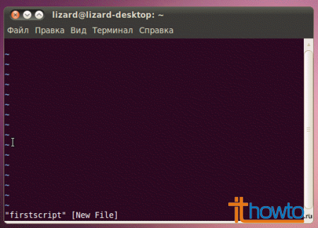
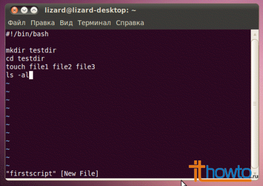
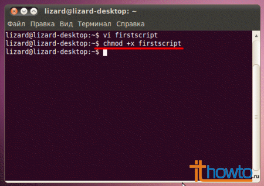
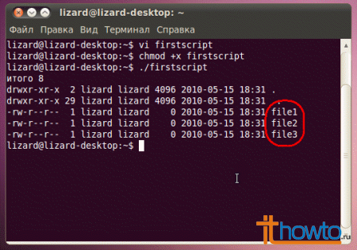

Для написания простого скрипта на bash, нам потребуется выполнить следующие простые действия:
1. Создадим в командной строке Linux пустой файл (назовем его для примера firstscript) и откроем его на редактирование в любимом текстовом редакторе (vi/vim, nano, gedit и т.д.):

2. Скопируем/вставим или просто наберем вручную следующий текст:
#!/bin/bash mkdir testdir cd testdir touch file1 file2 file3 ls -al

3. Выйдем из текстового редактора с сохранением созданного файла.
4. Сделаем наш скрипт исполняемым, чтобы в дальнейшем мы его могли без проблем запускать из командной строки, выполнив команду:
$ chmod +x firstscript

5. Попробуем запустить созданный нами скрипт, выполнив в командной строке: $ ./firstscript

Как это все работает:
первая строка нашего скрипта
#!/bin/bash
крайне необходима, для того, чтобы наш скрипт успешно выполнился.
вторая строка
mkdir testdir
создает каталог testdir
третья строка
cd testdir
позволяет перейти в созданный каталог testdir
команда touch в следующей строке touch file1 file2 file3
создает три файла и последняя команда в строке нашего скрипта
ls -al
позволяет вывести на экран содержимое текущего каталога, в котором, благодаря предыдущей строке, появилось три пустых файла
Как мы видим, в нашем простом скрипте все команды начинаются с новой строки. Каждая строка при запуске скрипта, последовательно выполняет свою работу, совершая те или иные действия.
Если вы ежедневно выполняете цепочку каких-либо одинаковых команд (с постоянными параметрами) в Linux, то возможно вам имеет смысл написать такой же простой скрипт на bash, который позволит вам сэкономить ваше время и автоматизировать вашу работу.